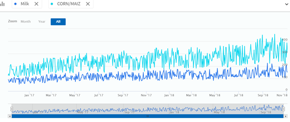

INVENTORY LEVEL¶
The Inventory Level screen of the platform depicts the availability of the selected products in the store inventory that can be discovered from the inventory data. The default time range for which insights are presented on first load is the current week. This can be changed with the help of the time filter in the top right portion of the screen.
Graphs¶
Line Graph¶
The line graph represents the inventory trend for the products selected, across the time frame.
- The horizontal axis contains time period and the vertical axis represents the quantity of the selected products in the store inventory.
- The icons next to the “zoom” text help in increasing or decreasing granularity of the graph.
- The user has the choice to select or deselect the specific products by choice.